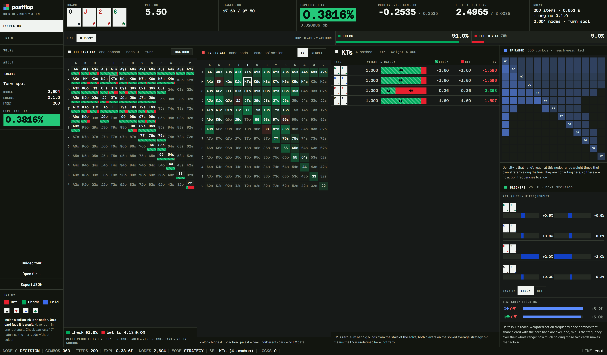
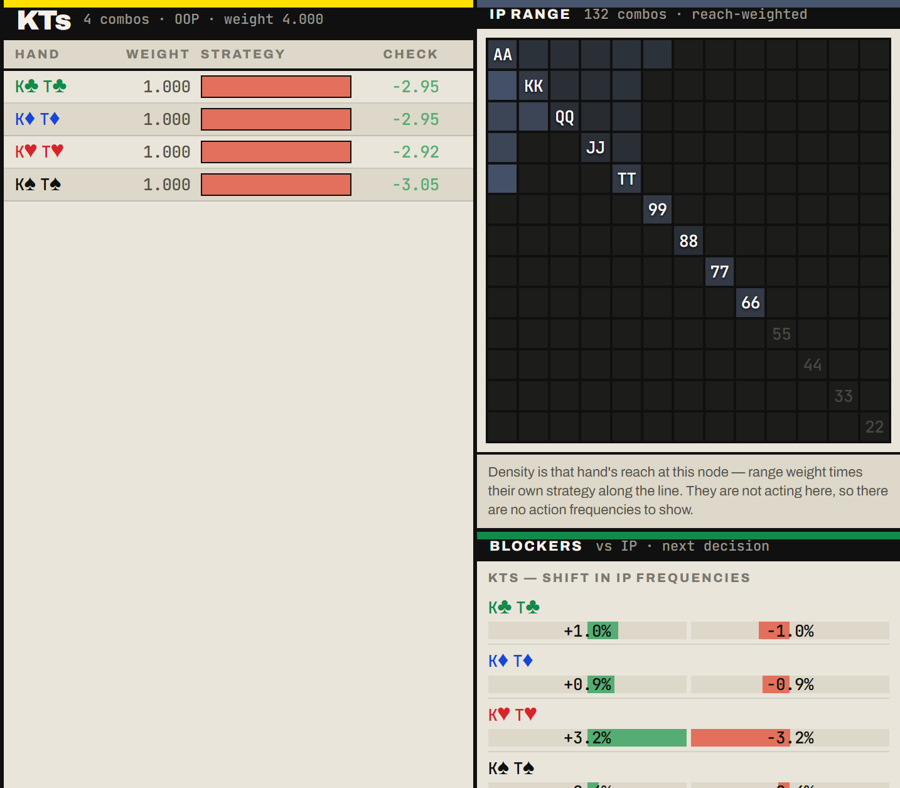
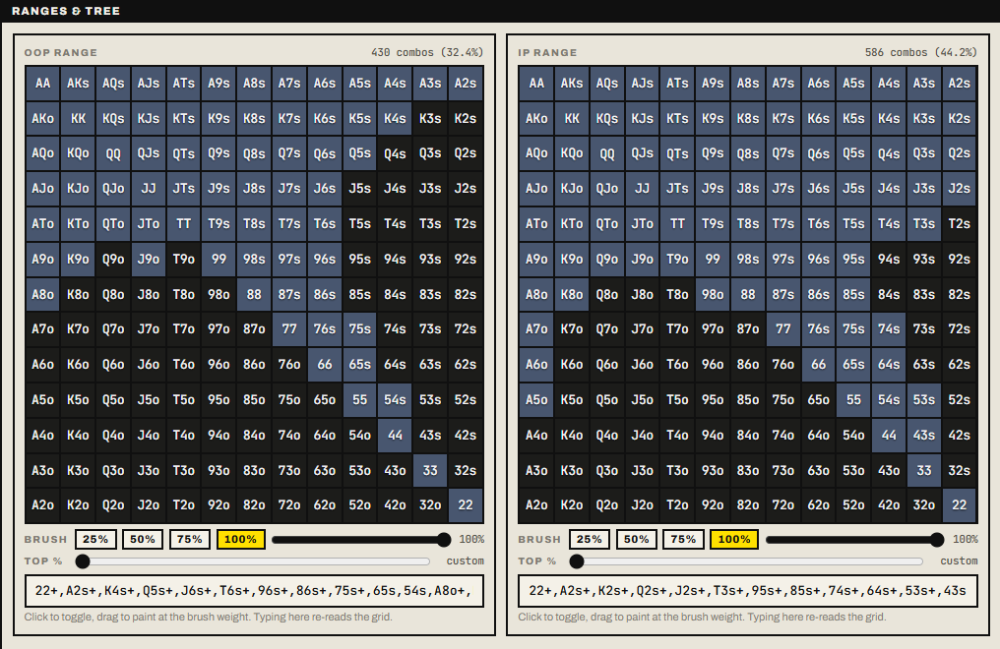
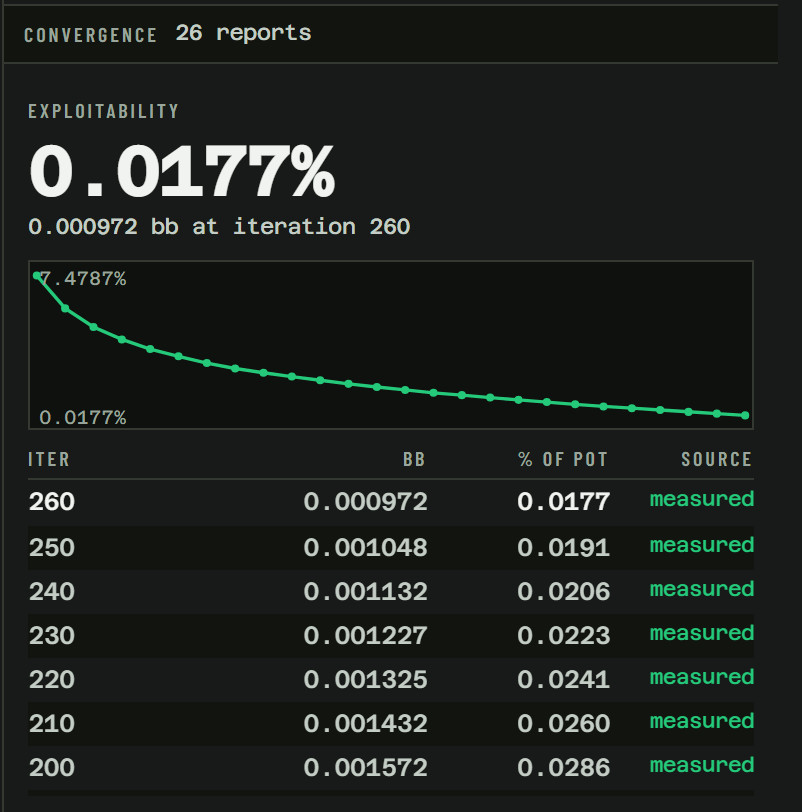
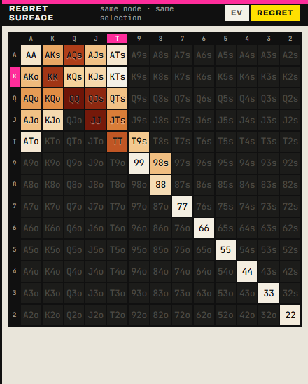
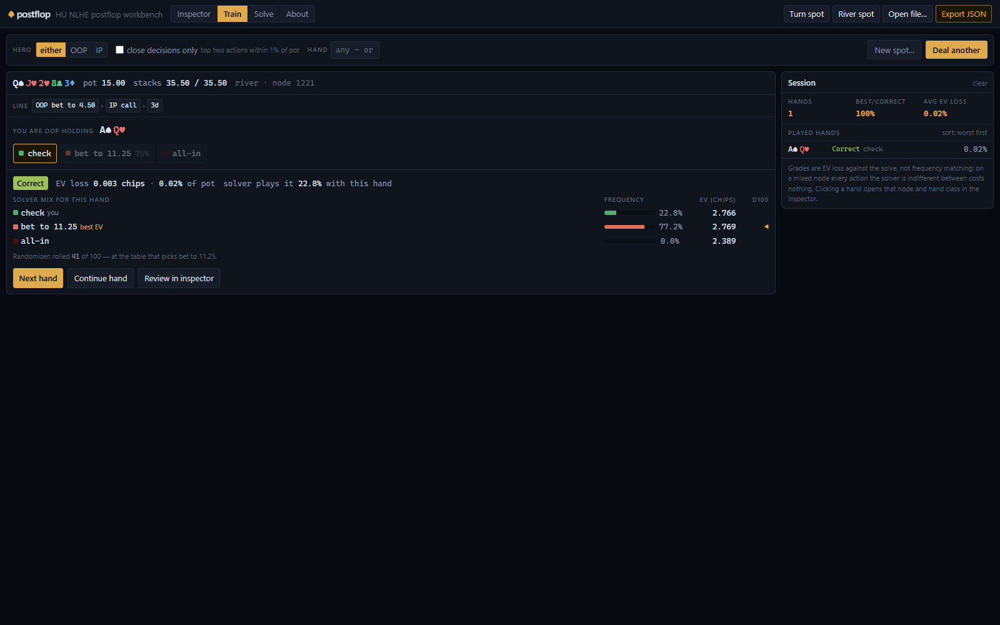
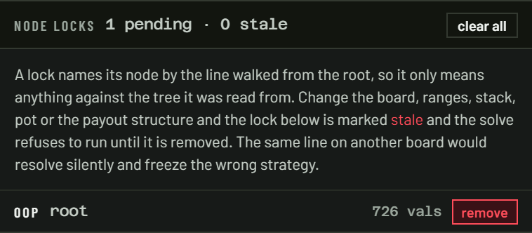
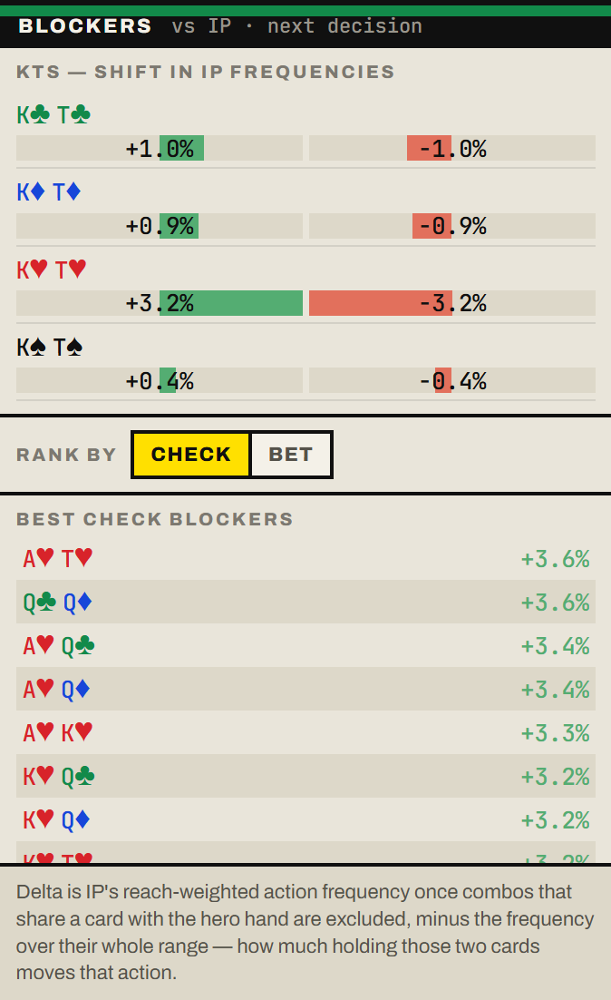
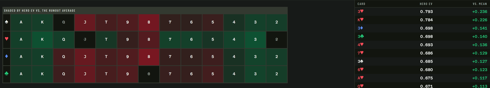

Convergence is measured, never asserted.
postflop is an open-source heads-up no-limit hold'em GTO solver: a Rust Discounted CFR engine with a full best-response exploitability calculator, a native CLI, WebAssembly bindings, and a browser workbench. Every exploitability and EV figure it prints comes straight out of the best-response calculator.
MIT licensed · Rust engine · solves right in your browser, nothing to install
Give it a spot. Walk the whole tree.
Board, both ranges, stacks, pot, bet sizings, in a small TOML file. The engine computes an approximate Nash equilibrium with a measured exploitability bound, then lets you inspect everything: per-hand strategies, per-hand EVs, action frequencies, and every runout.

♠Discounted CFR, full vector traversal
Brown & Sandholm's DCFR with alternating updates (α=1.5, β=0, γ=2, all configurable), a γ-weighted average strategy, and an optional CFR+-style regret floor. Every hand combo is traversed on every iteration. No sampling in the solve path.
♥Exact card removal everywhere
Fold and showdown evaluation run O(N+M) sweeps with per-card weight sums and inclusion–exclusion; ties are handled as distinct rank groups. Blocked combos are filtered out of the working vectors, never zero-weighted: 1176 live combos on a flop, 1128 on the turn, 1081 on the river.
♦Deterministic parallelism
The traversal fans out across chance-node runouts with rayon using a parallel-map, sequential-reduce design. Solved strategies are bit-identical for every thread count: 1 thread and 24 threads produce the same file.
♣Memory-conscious by construction
Flat arena game tree with no pointer chasing, chance tables shared across betting lines by board, and an optional i16 storage mode with per-node scale factors that roughly halves peak memory and documents its quantization floor.
Nothing on this page is estimated.
All numbers below were measured on a 24-logical-core Windows machine using the benchmark harnesses committed in engine/examples/. Run them yourself.
| Workload | Result |
|---|---|
| 7-card hand evaluation, 10M-hand pool, best of 3 passes | 77,000,000evals / sec |
| Full flop solve: 830k-node tree, 305 vs 196 combos, 1 thread → 24 threads | 2524 → 370ms / iter (6.8×) |
| Peak memory on that same spot (f32 storage; ~0.52× with i16) | 1513MB |
| Turn spot, 1,881 nodes, solved to 0.12% of pot | 0.2s |
| Toy river spot: 20k iterations plus 200 best-response reports | 32ms |
Reproduce the flop benchmark: cargo run -p engine --release --example solve_flop -- engine/examples/configs/milestone4.toml 400
The workbench runs in your browser.
The same engine, compiled to WebAssembly, running in a Web Worker with a live exploitability curve and a memory preflight. Load a solution produced by the CLI, or solve small spots directly on the page. JSON export round-trips through both the browser and the CLI — and every view is deep-linkable, so the tab, node, and selected combo live in the URL.
Drill into any combo
Click a cell and see every combo behind it: per-combo weights, the full action mix, and per-hand EVs in zero-sum chips. The IP range panel alongside shows reach-weighted density at the same node.

Paint ranges by hand or by weight
An interactive range editor with paintable grids, a weight brush, a top-X% slider, and preset spots. Ranges accept standard and PioSOLVER notation, weighted combos included, over all 1326 combos.

Watch it converge, live
Solves report exploitability at every interval while they run. The curve you watch is the best-response calculator's own output, in chips and as a percentage of the pot, recomputed at every report.

See which hands actually care
Beyond frequencies: color the grid by the highest-EV action per hand, or by regret — the chips lost taking the worse action, fading to white where the solver is indifferent. Per-action EVs sit next to every combo's strategy bar, so a 63/37 mix becomes "these six combos are worth real chips, the rest are free."

Train against the solve
Self-contained: pick a sample spot or set up any board, ranges and stacks right in the trainer, and it deals the first hand the moment the solve converges — board, pot, and line, but not the strategy. Pick an action and it is graded on the chips it costs, Best through Blunder, with the full solver mix and a d100 randomizer revealed after you answer. A running session score, a worst-hands-first review list, a "close decisions only" filter — and type an exact hand like AhKd to drill that combo on every deal.

Lock a node. Solve the exploit.
Freeze any decision node — the strategy on screen, or hand-written per-action frequencies in the TOML — and re-solve: the rest of the tree becomes the equilibrium counter-strategy to "villain never bluffs here." Locks travel inside the solution file, the structure guard holds stored strategies to them, and reported exploitability is measured against the locked profile. Locks captured on a different spot are refused, never silently re-applied.



Validated through four gated milestones.
In order, each with its committed test evidence. A milestone did not open until the previous one passed.
Kuhn poker
Converges to the known analytic equilibrium family: exploitability 0.002% of pot, K-bet equal to 3× J-bet, game value −1/18.
AKQ half-street game
Matches the closed-form equilibrium derived from the indifference conditions, including the boundary case B ≥ P where the Nash set is a segment rather than a point.
River spot
Indifference conditions verified against hand algebra for named combos (bluff EV equals check EV, call EV equals fold EV within 1e-3). Bluff ratio 1/3 and minimum defense frequency 1/2 recovered on a blocker-free construction.
Full flop spot
An 830k-node tree whose exploitability falls monotonically from 16.5% to 0.22% of pot, zero-sum error at 7e-7, bit-identical across 1, 8, and 24-thread pools.
Beyond the milestones: the 7-card evaluator is checked against a slow reference on 1,000,000 random hands and exhaustively on all 2,598,960 five-card hands with zero mismatches. Terminal sweeps are property-tested against naive O(N·M) oracles at full 1081-combo width. Suit isomorphism is exhaustively verified over all 22,100 flops. And where the engine approximates, it says so: the CLI refuses the turn-sampling flag until an exact-labeled sampling mode exists. The solver never silently approximates.
Solve your first spot.
A spot is a small TOML file. Requires Rust (stable); Node 20+ and wasm-pack for the web UI.
# spot.toml board = "Qs Jh 2h" oop_range = "22+,ATs+,KTs+,QTs+,JTs,T9s,98s,ATo+,KJo+" ip_range = "66+,A9s+,KTs+,QTs+,JTs,ATo+,KQo" effective_stack = 40.0 starting_pot = 6.0 max_iterations = 600 target_exploitability = 0.5 # stop at 0.5% of pot [sizings.oop.flop] bet = { percents = [50.0], allin = false } [sizings.ip.flop] bet = { percents = [50.0], allin = false } raise = { percents = [60.0], allin = false }
1 · Build and solve
cargo build --release solver solve --config spot.toml \ --report-every 100 --out solution.json
2 · Inspect any line
show never re-solves: it rebuilds the deterministic tree and validates the file against it.
solver show --solution solution.json \ --line "check,bet:50" --combo AhKh
3 · Or skip all of that
Solve small spots with nothing installed at the hosted workbench, or run it locally: one command builds whatever is missing and opens it.
python launch.py